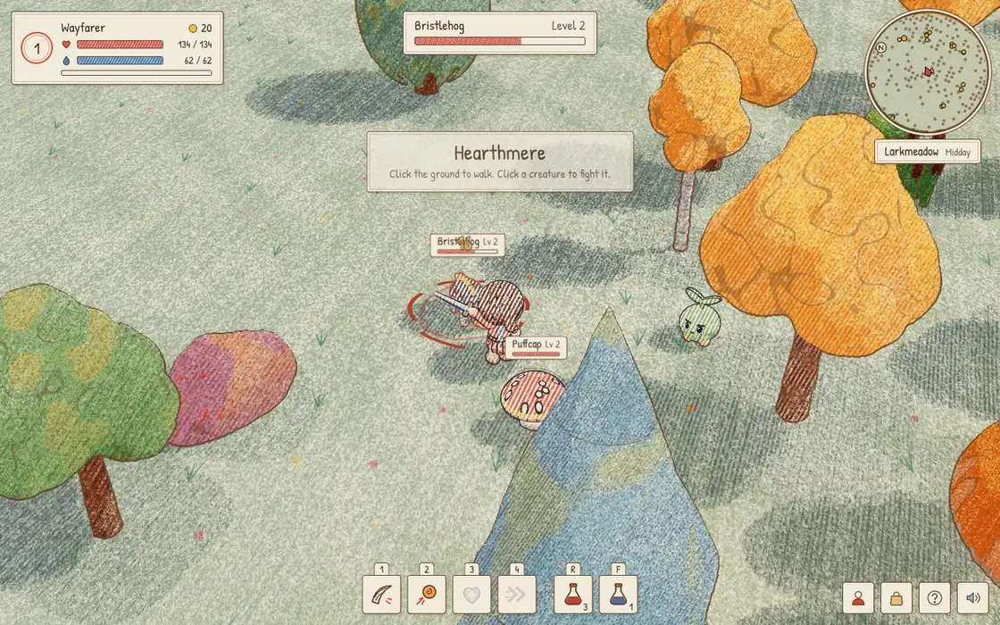
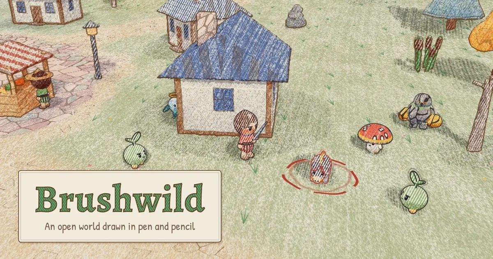
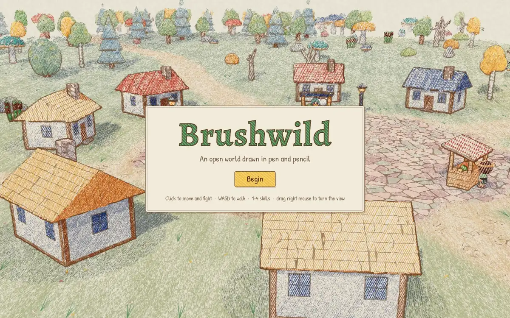
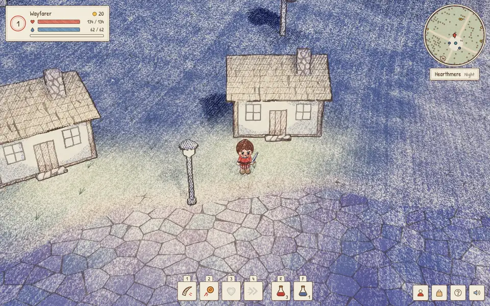
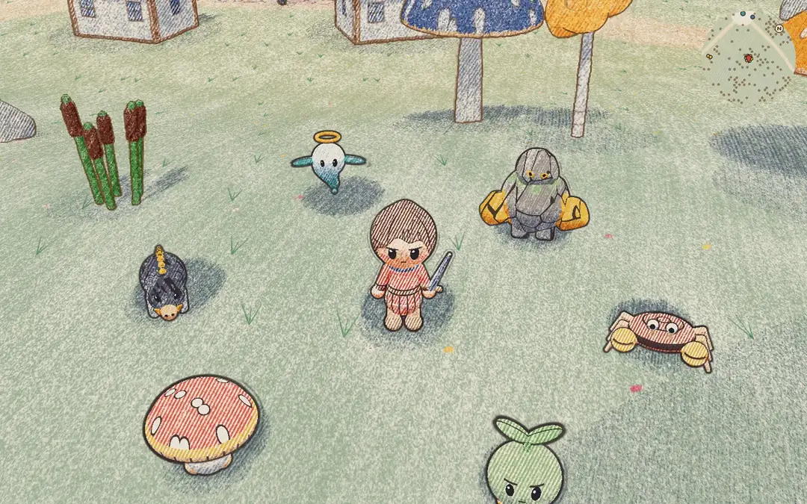
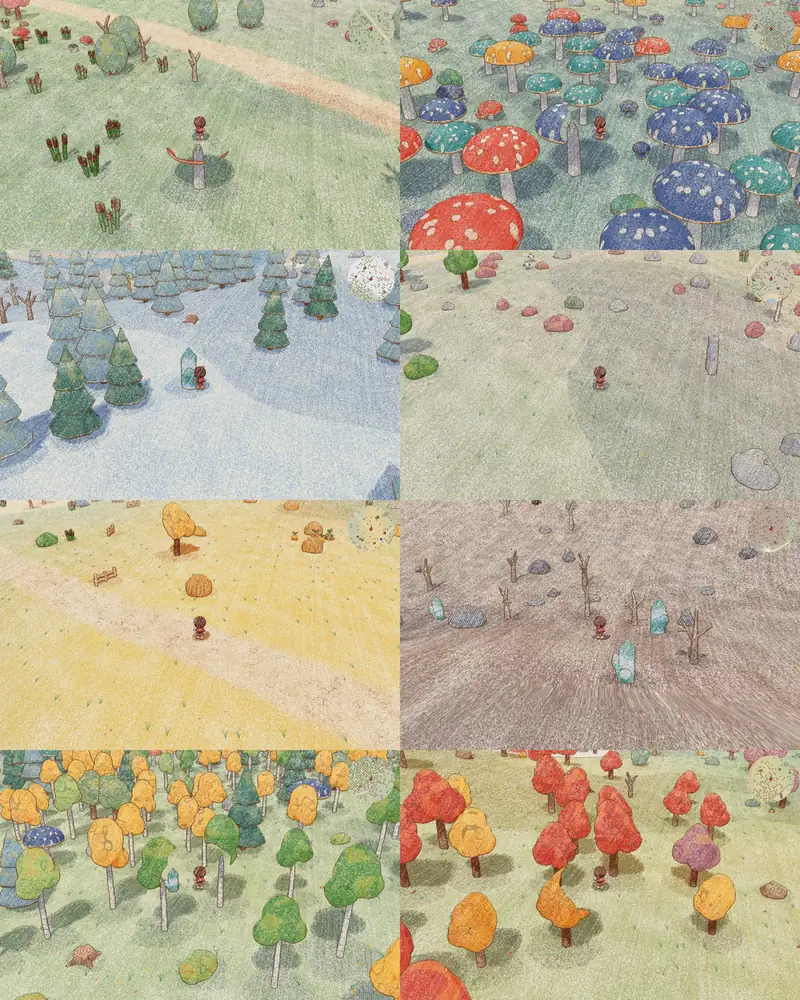
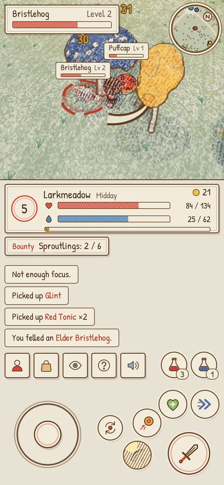
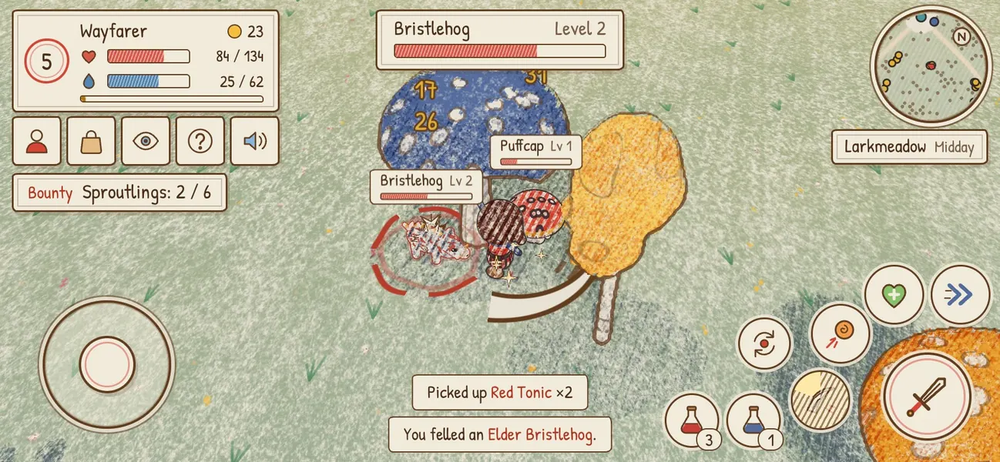

奶油色的纸上，铅笔排线铺开一片草地，橙黄的树投下淡影。一个穿红衣的小人在林间挥剑，一头刚鬃兽被红圈标出即将落地的位置，旁边还蹦着一朵粉红色的孢子帽。这不是把插画扫描进游戏，而是着色器在浏览器里当场画出来的世界。Brushwild 是 Kevin T. Ngo 的开放世界动作角色扮演游戏，可以在电脑、手机或手柄上打开，土地随走随生成，不附带任何贴图、模型或精灵表。
docs/ 与官方分享图，作者提供。字体 Alegreya、Patrick Hand、Atkinson Hyperlegible 按 README 所述为 SIL Open Font License。
docs/fight.jpg，作者提供，MIT）。点击图片可打开可玩演示。这是什么
Brushwild 是一款可在浏览器里玩的开放世界动作 RPG。仓库在 github.com/kevintngo/procedural-rpg，可玩演示在 kevintngo.github.io/procedural-rpg。作者是 Kevin T. Ngo（@kevin_t_ngo）。package.json 里的版本是 0.2.0，需要 Node 20.19 或更高才能在本地跑。
README 的第一句把画风说得很清楚：像用圆珠笔和彩色铅笔描在奶油色的纸上。整页共用一个排线方向，笔触是看得见的，纸会从缝隙里透出来；暗部是更深一层的铅笔，亮部就是裸着的纸；风景用褐色钢笔，人物用大胆的深色轮廓；每头野兽身上都有一块芥末黄——那是会痛的部位。作者写道，这套画法继承自他的 2D 游戏 Valsera，只是从烘焙好的精灵图，变成了实时的三维世界。
它要你做的事也很完整：选职业、点技能树、在五种稀有度的装备里换更好的掉落、清理地牢、接守望官的委托，并且一直向外走。土地是边走边生成的，没有边界。

static/og.jpg）。左下角的纸牌写着：「An open world drawn in pen and pencil。」能做什么
当前 README 列出四个职业：
- 守望者（Warden）：剑与盾的近战，打出或挨到的每一击都积攒决心（Resolve）。
- 余烬匠（Emberwright）：持杖施放火焰、寒霜与风暴，消耗专注（Focus）。
- 巡路者（Strider）：弓、匕首和陷阱，消耗气息（Breath）。
- 赛博格（Cyborg）：以 99 级登场，技能全满，臂炮里有激光、轨道打击和一枚袖珍奇点，消耗算力（Compute）；头部是烘焙进着色器的三维模型。
创建英雄时可选择外衣、袍子或铠甲的颜色，以及发型。技能树有七个分支，从基础一路开到终极技能和关键被动，上层花掉的点数会打开下层。每项技能有五个等级、一次强化，以及二选一的升级。升到 99 级都会获得点数，之后退点要花货币 glint。
装备分普通、魔法、稀有、传奇和独特五档，十个栏位，带随机词缀、传奇能力和具名独特装。每件物品都有自己的画，提示框会用精确数字和你正穿着的装备对比，掉落会偏向当前职业。铁匠负责拆解、附魔和出售，炼金师酿更强的补剂，仓库由所有英雄共用。
战斗必须挪步。每种生物都有自己的招式，落地前会画在地面上：芽灵（Sproutlings）跳跃，孢子帽（Puffcaps）留下孢子，刚鬃兽（Bristlehogs）沿一条直线冲锋，鬼火（Wisps）保持距离并抛出光点，岩灵（Craglings）砸地，壳咬（Shellsnaps）缩进去再咬出来。踏出标记，这一击就会打空。精英会掷出词缀；地牢首领在半血时变招。命中会让世界停顿一瞬，暴击或击杀时更长。箭是真正沿弧线飞出的箭，没中就会插在地上。
集市城镇沿路而建，有路石、铁匠、炼金师、守望官和仓库。墓穴和洞穴从路边岔开，最远的房间里是首领，安静的一间里是窖藏。路上还能找到藏匿处、暂时赐福的立石、标出周围地点的信标，以及用于传送的路石。守望官会派清剿、采集、侦察、击杀长者或清理地牢的委托；「长路」（The Long Walk）会为你踏足的每一片新土地付酬。天黑之后，生物从更远处就能察觉你，打得更重，报酬也更好。倒下会把一部分 glint 掉在原地，并标在地图上，直到你回去取回。难度分故事、普通、老兵和噩梦，可在城镇里更换。

docs/title.jpg）。
docs/night.jpg）。画面怎么画出来
没有贴图，也没有模型文件。README 把绘制分成四趟：
- 世界趟：对地形高度场、所有道具（树、石、房屋和地牢墙都是符号距离形状）以及海面做一次全屏光线步进。每个像素决定用哪支铅笔、力道多大、怎么铺暗部、上面再落哪些钢笔记号。内部分辨率会随测得的 GPU 耗时调整。
- 墨线趟：从深度台阶、物体轮廓和褶皱里找出轮廓。
- 角色趟：每个形象都是一小块距离场模型，在朝向镜头的四边形里做光线步进。英雄带着职业套装和正穿着的装备，生物、沿飞行方向倾斜的箭也是这样画出来的。轮廓加粗，排线跟着形象走，并且每秒重铺六次；姿势按两帧一拍来步进。
- 最终趟：带齿的纸，铅笔按笔触铺上，更深的铅笔做暗部，钢笔涂鸦（草丛、水纹），再沿轮廓勾线，最后把人物叠上去。被景物挡住的英雄会显示成钢笔轮廓。小地图也在这一趟画。
排线落在纸面坐标里，沿一个被固定住的视线方向的右轴和上轴投影，所以镜头移动时笔触仍粘在世界上；转向足够远之后，才会淡入一个新的方向。笔触大小按深度从嵌套的层级里选取，远近看起来一样粗。没有Bloom、模糊或色调映射：没有什么能比纸更亮。夜晚用靛青铅笔来画，灯是一滩裸纸，远景则是少铺一些。
界面用的是同一只手。src/ui/art.ts 在画布上用彩色铅笔排线和略微晃动的褐色钢笔勾线，按每件物品的种子来画，所以两把同一种剑的刃、护手和染色仍会不同，并带一圈稀有度颜色的铅笔光晕。英雄和镇民的表情会随处境变化：歇着时微笑，施法时专注，挨打时皱眉，升级或拿到传奇时高兴，血低时担心。

docs/zoo.jpg）。
docs/biomes.jpg）。世界如何生成
起始城镇以外的一切都来自种子。地形生成大陆、丘陵、山脉、河流、湖泊、沼泽和水路边的道路网格。十三种生物群系由五张变化缓慢的场决定：温度、湿度、魔力、野性，以及离家的距离；每种群系有自己的地面铅笔、石、植物和野兽。道路交叉处会出现神龛、有补锅匠的营地、住着长者野兽的废墟、农庄、集市城镇和地牢门口，并带一个编出来的名字。地牢是网格上的房间与走廊，写成和开放世界相同的区块格式，所以由同一套着色器来画。路边还能找到藏匿处、立石和信标。野兽会随国度变形：六种身形会变成霜岩灵、沼壳咬、花瓣鬼火之类，等级由离镇距离决定。云量会漂移；白昼、黄昏和夜晚会换铅笔。
没有边界。土地按区块进入视野时生成，README 写生成一个区块大约要 3 毫秒。生物每 95 个单位升一级。画面用单精度浮点来画，作者写道在约 20 公里处看起来仍正常，到约 200 公里才会出现台阶状的边缘。
技术结构
这是一个 TypeScript（strict）项目，用 Vite 7 开发与打包，Vitest 3 跑规则和存档测试，界面是 Preact 10 加 @preact/signals。渲染是自研的 WebGL2 管线，没有用 Three.js 或 Babylon：架构说明里写，现成引擎给不出这套纸面排线，反而会增加体积、和画法打架。字体通过 @fontsource 自托管，不向第三方请求。音频是合成的，发行构建时单独成块。
目录按单向依赖分层：engine/ 与 core/ 不含游戏知识，world/ 生成地形和地牢（不碰 GL，可在 Node 里跑），gfx/ 负责渲染，game/ 放内容、纯规则、存档和系统，ui/ 与 audio/ 只监听事件总线。系统之间不互相调用，而是在类型化的总线上公布事实。内容数据自带着色器代码。
规则层是纯函数。一套「构筑编译器」会把技能树、装备、赐福和增益上的全部效果收拢，算出属性和每项技能的有效数字；换装或点技能时算一次，不会每一击都算。物品对比就是把「穿上」和「没穿」各编译一遍。所有伤害走同一个公式。物品在存档里只记下掷出的基础、稀有度、物品等级和词缀编号，数字在读取时查表，所以改平衡会落到已经在背包里的装备上。
推送到 main 时，GitHub Actions 会测试、构建并发布到 gh-pages 分支，也就是演示站。
怎么运行
需要 Node 20.19 或更高：
npm install
npm run dev然后打开它打印的地址（http://localhost:5173）。地址后加 ?new 会打开创建英雄的界面，加 ?touch 可在桌面上预览手机界面。进度存在浏览器的本地存储里；「设置 › 存档」可以导出和导入文件。
| 脚本 | 作用 |
|---|---|
npm run dev | 带模块热更新的开发服务器 |
npm test | 规则与存档测试（Vitest） |
npm run typecheck | 严格 TypeScript 检查 |
npm run check | 类型检查加测试 |
npm run build | 先类型检查，再把发行版打进 dist/ |
npm run preview | 预览 dist/ |
操作
所有动作都可以在「设置 › 操作」里重绑，每个动作可以绑两枚键和一个手柄键。
| 键鼠 | 作用 |
|---|---|
| 左键 | 行走、攻击、交谈、拾取。按住可继续走或打 |
| 右键，1 2 3 4 | 技能 |
| W A S D | 行走 |
| 空格 | 闪避 |
| F | 攻击最近的生物、交谈、开门 |
| R | 喝补剂 |
| Tab | 下一个目标 |
| Shift | 站住原地攻击 |
| Q / E、右键拖、滚轮 | 旋转视角、俯仰、缩放 |
| I 或 B / C / K / J / M / V | 背包 / 角色 / 技能树 / 日志 / 地图 / 视野 |
| Alt（按住） | 显示所有物品标签；在提示框里显示每条词缀可掷出的范围 |
| Esc | 菜单，或关掉当前打开的界面 |
手柄用左摇杆走、右摇杆转视野；A 攻击最近的生物、交谈或使用；X、Y、B、RB、RT 是技能；LT 闪避，LB 喝补剂。方向键右是下一个目标，左是技能树，上下缩放。Back / Start / 右摇杆按下分别是背包、菜单和显示所有物品标签。菜单用摇杆和 A 来操作。
触屏时，左拇指下会出现摇杆，技能沿右拇指下的弧排列，大按钮攻击最近的生物（按住可连续打），点画面则走路。横握时画面铺满屏幕；竖握时画面是顶部一条，其余控件排在下面。

docs/phone-upright.jpg）。
docs/phone-sideways.jpg）。界面与无障碍
界面也是那张纸：奶油色底板、钢笔边线、手写字，条里填的是铅笔排线。作者写道界面按 WCAG 2.2 AA 来要求，并给出在底板色 #f1ebdc 上测得的对比度：正文 #4a2e18 为 10.4:1，弱化文字 5.0:1，红 / 蓝 / 绿字分别为 5.2 / 5.3 / 4.8:1，钢笔边线 8.1:1，条的填充至少 3.3:1，焦点环 5.9:1。这些是 README 里的自报测量。
每个控件都是真正的按钮，有供屏幕阅读器使用的名字，至少 30 像素见方（触屏上 40 像素或更大），键盘焦点时带蓝色钢笔环。条是带数值的 meter，消息会被朗读。键鼠和手柄都能到达背包、技能树和设置。稀有度不只靠颜色，条上也有图标和数字。设置里可以改界面和文字大小、换更易读的 Atkinson Hyperlegible、高对比、色觉调色板和警告色、减少动态效果、关掉屏幕震动、命中停顿和闪白、让铅笔线条保持稳定、让形象逐帧平滑、为重要声音加上方向字幕、显示屏外威胁箭头、单声道、游戏速度、更长的预警、自动攻击、瞄准辅助，以及全部重绑。
作者也写明：游戏本身是一幅要用鼠标、键盘、手柄或拇指来玩的活动画面，除上面这些角色与标记外，还没有在屏幕阅读器上做过完整测试。
已知限制与下一步
README 列出的限制包括：目前是单人，输入经由 player.intent 和事件流动，这是以后若要加网络层会接上的缝。移动会转向并贴着障碍滑过，没有远距寻路。世界大约画到 108 个单位（WORLD.VIEW），更远的一圈地形更粗。着色器里的位置是单精度浮点，离起点数十公里后细节会变粗，浮动的渲染原点可以缓解这一点。触屏界面是在桌面 Chrome 里按手机尺寸测的，还没有在真机上测过。
架构说明把当前这一轮称作骨架，后面还计划在 50 级之后加入类巅峰的成长、插槽与宝石、更多职业、主线任务、带战争迷雾的世界地图、可安装的 PWA、以及把同一套 player.intent 接到合作多人。这些是作者写下的方向，不是已经做完的功能。
许可
根目录 LICENSE 为 MIT License，Copyright (c) 2026 kevintngo。README 末尾同样写 MIT，并说明字样使用 Alegreya、Patrick Hand 和 Atkinson Hyperlegible（SIL Open Font License），由游戏通过 @fontsource 打包。许可证原文见附录 C。
相关阅读
- 同一作者，同一支钢笔彩铅：Looseleaf：把 shadcn/ui 画在纸上，以及 珍珠奶茶店的生意：四张过了模型检查的手绘状态图。
- 同一作者的其他浏览器世界：What the water keeps：乘船穿过八个梦境，以及 动画剧集片头：所见都是代码。
- 另一件用代码画成的可走入世界：Painted Valley：走进一片用代码画成的夏日山谷。
附录 A：README 全文中译
Brushwild
这是一款动作角色扮演游戏，画面像用圆珠笔和彩色铅笔描在奶油色的纸上，可以在浏览器里玩，电脑、手机或手柄都行。选一个职业，点亮技能树，在五种稀有度的装备里追更好的掉落，清理地牢，乐意走多远就走多远：土地会随着你的脚步生成。整个世界都由着色器画出来，每件物品和职业铭牌也是代码绘制的，所以游戏不附带贴图、模型或精灵表。
游玩地址：https://kevintngo.github.io/procedural-rpg/
画风继承自 Valsera，一款用同样手法画成的 2D 游戏，只是从烘焙好的精灵图，变成了实时的三维世界：整页共用一个排线方向；笔触清晰可见，纸面从缝隙里透出来；暗部是更深一层的铅笔，亮部就是裸着的纸；风景用褐色钢笔，人物用大胆的深色轮廓；每头野兽都有一块芥末黄：那是会痛的部位。
能做什么
- 四个职业。守望者持剑与盾近战，打出或挨到的每一击都积攒决心。余烬匠持杖施放火焰、寒霜与风暴，消耗专注。巡路者用弓、匕首和陷阱看护道路，消耗气息。赛博格以 99 级登场，技能全满，臂炮里装着激光、轨道打击和一枚袖珍奇点，全部消耗算力；他的头是烘焙进着色器的三维模型。每个职业有自己的技能、被动和关键被动，也有自己的外形（创建英雄时选择外衣、袍子或铠甲的颜色，以及发型）。
- 一棵技能树。七个分支，从基础一直到终极技能和关键被动，上层花掉的点数会打开下层。每项技能有五个等级、一次强化，以及二选一的升级。升到 99 级都会获得点数；之后退点要花 glint。
- 值得读完的掉落。普通、魔法、稀有、传奇和独特，十个装备栏，带随机词缀、传奇能力和具名独特装。每件物品都有自己的画，提示框会用精确数字和你正穿着的装备对比，掉落会偏向你的职业。铁匠拆解、附魔和出售；炼金师酿造更强的补剂；仓库由所有英雄共用。
- 必须挪步的战斗。每种生物都有自己的招式，落地前会画在地面上：芽灵跳跃，孢子帽留下孢子，刚鬃兽沿一条直线冲锋，鬼火保持距离并抛出光点，岩灵砸地，壳咬缩进去再咬出来。踏出标记，这一击就会打空。精英会掷出词缀；地牢首领在半血时会变招。
- 城镇与地牢。集市城镇沿路而建，有路石、铁匠、炼金师、守望官和仓库。墓穴和洞穴从路边岔开：要清理的厅堂，最远的房间里有首领，安静的一间里有窖藏。
- 可以找到的东西。藏匿处、能暂时赐福的立石、会标出周围地点的信标，以及用于旅行的路石。
- 守望官派的活。清剿、采集、侦察、击杀长者或清理地牢。长路会为你踏足的每一片新土地付酬。
- 夜晚与倒下。天黑之后，生物会从更远处察觉你，打得更重，报酬也更好。倒下会把一部分 glint 掉在倒下的地方，并标在地图上，直到你回去取回。
- 有分量的打击。命中会让世界停顿一瞬，暴击或击杀时更长。箭是真正沿弧线飞出的箭，没中就会插在地上。
- 四个难度。故事、普通、老兵和噩梦，可在城镇里更换。
运行
需要 Node 20.19 或更高版本。
npm installnpm run dev然后打开它打印的地址（http://localhost:5173）。加上 ?new 会打开创建英雄的界面，加上 ?touch 可在桌面上看到手机界面。进度存在浏览器的本地存储里；「设置 › 存档」可以导出和导入文件。
| 脚本 | 作用 |
|---|---|
npm run dev | 带模块热更新的开发服务器 |
npm test | 规则与存档测试（Vitest） |
npm run typecheck | 严格的 TypeScript 检查 |
npm run check | 类型检查加测试 |
npm run build | 先类型检查，再把发行版打进 dist/ |
npm run preview | 提供 dist/ 的预览服务 |
每次推送到 main，GitHub Actions（.github/workflows/deploy.yml）都会测试、构建并发布，把构建结果写到 GitHub Pages 所服务的 gh-pages 分支。也可以在 Actions 页手动运行。
操作
所有动作都可以在「设置 › 操作」里重绑（每个动作可以绑两枚键和一个手柄键）。
| 键鼠 | 作用 |
|---|---|
| 左键 | 行走、攻击、交谈、拾取。按住可继续走或打。 |
| 右键，1 2 3 4 | 技能 |
| W A S D | 行走 |
| 空格 | 闪避 |
| F | 攻击最近的生物、交谈、开门 |
| R | 喝补剂 |
| Tab | 下一个目标 |
| Shift | 站住原地攻击 |
| Q / E、右键拖、滚轮 | 旋转视角、俯仰、缩放 |
| I 或 B / C / K / J / M / V | 背包 / 角色 / 技能树 / 日志 / 地图 / 视野 |
| Alt（按住） | 显示所有物品标签；在提示框里，显示每条词缀可掷出的范围 |
| Esc | 菜单，或关掉当前打开的界面 |
| 手柄 | 作用 |
|---|---|
| 左摇杆 / 右摇杆 | 行走 / 旋转视角 |
| A | 攻击最近的生物、交谈、使用 |
| X、Y、B、RB、RT | 技能 |
| LT / LB | 闪避 / 补剂 |
| 方向键 | 下一个目标（右）、技能树（左）、缩放（上下） |
| Back / Start / 右摇杆按下 | 背包 / 菜单 / 显示所有物品标签。菜单用摇杆和 A 来操作。 |
在触屏上，左拇指下会出现摇杆，技能沿右拇指下的弧排列，大按钮攻击最近的生物（按住可把战斗持续下去），点画面则走路。横握时画面铺满屏幕；竖握时画面是顶部一条，其余都排在下面。
新的旅程会以几步入门开始，做完一步才算完成；可以跳过，菜单里还能把它们找回来。
它是怎么画的
- 世界趟——对地形高度场、所有道具（树、石、房屋和地牢墙都是符号距离形状）以及海面做一次全屏光线步进。每个像素决定要画出什么：哪支铅笔、力道多大、怎么铺暗部、上面再落哪些钢笔记号。它按测得的 GPU 耗时，在一个会自适应的内部分辨率上运行。
- 墨线趟——从深度台阶、物体轮廓和褶皱里找出轮廓。
- 角色趟——每个形象都是一小块距离场模型，在朝向镜头的四边形里做光线步进：英雄带着他们的职业套装和正穿着的装备，还有生物，以及沿飞行方向倾斜的箭。轮廓加粗，排线跟着形象走，并且每秒重铺六次；姿势按两帧一拍来步进。
- 最终趟——带齿的纸，铅笔按笔触铺上，更深的铅笔做暗部，钢笔涂鸦（草丛、水纹），再沿轮廓勾线，最后把人物叠上去。被景物挡住的英雄会显示成钢笔轮廓。小地图也在这里画。
排线落在纸面坐标里，沿一个被固定住的视线方向的右轴和上轴投影，所以镜头移动时笔触仍粘在世界上；转向足够远之后，才会淡入一个新的方向。笔触大小按深度从嵌套的层级里选取，远近看起来一样粗。没有光晕、模糊或色调映射：没有什么能比纸更亮，夜晚用靛青铅笔来画，灯是一滩裸纸，远景则是少铺一些。
界面用的是同一只手：物品和职业的画由 src/ui/art.ts 在画布上用彩色铅笔排线和略微晃动的褐色钢笔勾出来，按每件物品的种子绘制，所以两把同一种剑在刃、护手和染色上仍会不同，并带一圈稀有度颜色的铅笔光晕。英雄和镇民的表情会随发生的事改变：歇着时微笑，施法时专注，挨打时皱眉，升级或拿到传奇时高兴，血低时担心。
生成了什么
起始城镇以外的一切都来自种子：
- 地形——大陆、丘陵、山脉、河流、湖泊和沼泽水塘，以及蜿蜒网格上的道路。
- 十三种生物群系，由五张变化缓慢的场选定（温度、湿度、魔力、野性、离家的距离），各自有地面铅笔、石、植物和野兽。
- 地点出现在道路交叉处：神龛、有补锅匠的营地、住着长者野兽的废墟、农庄、集市城镇，以及地牢门口，每一处都有一个编出来的名字。
- 地牢——网格上的房间与走廊，写成和开放世界相同的区块格式，所以由同一套着色器来画。
- 发现在道路之外：藏匿处、立石和信标。
- 随国度变形的野兽——六种身形会变成霜岩灵、沼壳咬、花瓣鬼火之类；离镇距离决定等级。
- 天气与时辰——云量会漂移；白昼、黄昏和夜晚会各自换铅笔。
没有边界。土地按区块进入视野时生成；一个区块大约要 3 毫秒。生物每 95 个单位升一级。画面用单精度来画，所以在 20 公里外看起来仍正常，到 200 公里会开始出现台阶状的边缘。
目录
.github/workflows/ 每次推送到 main 时的发布流程
index.html 页面
public/static/ 图标、应用图标、分享图、web app manifest
tools/ 发行构建时对着色器的精简
src/
main.ts 入口：设置、存档、游戏、界面、声音
config.js 共享的可调参数（也会作为 #defines 交给着色器）
engine/ 事件、带种子的随机数、带动作映射和手柄的输入
core/ 数学、噪声、设备
world/ 地形、生物群系、道具、地点、发现、地牢 （不碰 GL；可在 Node 里跑）
gfx/ 渲染器、相机、各趟、着色器片段、形象与箭的模型
game/
content/ 职业与技能、效果、状态、物品、怪物、赐福、外观
rules/ 纯规则：属性、伤害、物品、技能树、构筑编译器、背包、掉落
state/ save/ 被保存的角色；存储、版本、迁移
systems/ 操作、玩家、技能、战斗、AI、生成、掉落、区域、商人，……
game.ts view.ts fx.ts
settings/ 设置、默认值、以及如何生效
ui/ Preact 界面：HUD、面板、技能树、设置、屏幕、美术
audio/ 合成的声音与音乐
docs/ARCHITECTURE.md 各部分如何拼在一起，以及后续方向各层单向指向（engine/core ← world ← gfx ← game ← ui/audio），系统在类型化的事件总线上公布事实，而不是互相调用，内容自带着色器代码。细节见 docs/ARCHITECTURE.md。
怎么加东西
| 要加 | 做这些 |
|---|---|
| 一个职业 | 在 src/game/content/classes/ 里写一个 ClassDef（技能、被动、关键被动、资源、起始装备），并在 classes/index.ts 登记。 |
| 一项技能 | 在所属职业里加一行：来自 game/systems/behaviors.ts 的一种行为，加上 params、等级、强化和作为效果的升级。 |
| 一件物品基底、词缀、传奇能力或独特装 | 在 game/content/items.ts 里加一行。它的画来自 ui/art.ts 里对应的栏位或武器类型。 |
| 一只怪物 | 在 game/content/monsters.ts 里加一行，并写进某个生物群系的 monsters。新的身形：在 gfx/archetypes/ 里 registerArchetype({...})。 |
| 一个生物招式 | 在 game/systems/specials.ts 里加一项，用怪物的 special 来点名。 |
| 一种生物群系 | 在 world/biomes.js 里 registerBiome({...})。 |
| 一件道具 | 在 world/props.js 里 registerProp({...})，带上形状和铅笔，再写进某个群系或地点。 |
| 一处地点 | 在 world/sites.js 里 registerSiteKind(id, build)。 |
| 一种委托 | 在 game/systems/bounties.ts 的 KINDS 里加一项。 |
| 一种效果 | 在 gfx/passes/fx.js 里 registerFx(id, glsl)，再由 game/fx.ts 里的配方生成。 |
| 一个系统 | 写一个带 update(dt) 的类，加进 game/game.ts 的列表。 |
| 一项设置 | 在 settings/settings.ts 里加字段，在 ui/settings.tsx 里加控件，在 settings/apply.ts 里写它如何生效。 |
| 一种声音 | 在 audio/audio.js 的事件表里加一项。 |
着色器代码写在 glsl 标记的模板字符串里；发行构建会去掉它们的缩进。
界面与无障碍
界面也是那张纸：带钢笔边线的奶油色底板、手写字，条里填的是铅笔排线。它按 WCAG 2.2 AA 来要求。在底板色 #f1ebdc 上测得的对比度：
| 部分 | 颜色 | 对比度 |
|---|---|---|
| 文字 | #4a2e18 | 10.4:1 |
| 弱化文字 | #7a5f48 | 5.0:1 |
| 红 / 蓝 / 绿字 | #b3341f / #48608f / #3d7332 | 5.2 / 5.3 / 4.8:1 |
| 钢笔边线 | #623c1e | 8.1:1 |
| 条的填充 | 3.3:1 或更高 | |
| 焦点环 | 5.9:1 |
- 每个控件都是真正的按钮，有供屏幕阅读器使用的名字，至少 30 像素见方（触屏上 40 像素或更大），键盘焦点时带蓝色钢笔环。条是带数值的 meter；消息会被朗读。
- 键盘和手柄能到达所有地方，包括背包、技能树和设置。
- 没有什么只靠颜色来区分：稀有度总是写出来的，条上带图标和数字。
- 设置覆盖界面和文字大小、更易读的字体（Atkinson Hyperlegible）、高对比、色觉调色板和可选的警告色、减少动态效果、屏幕震动、命中停顿、闪白、稳定的铅笔线条、平滑的形象、带方向的字幕、屏外威胁箭头、单声道、游戏速度、更长的预警、自动攻击、瞄准辅助，以及全部重绑。
游戏本身是一幅要用鼠标、键盘、手柄或拇指来玩的活动画面；除上面这些角色外，它还没有在屏幕阅读器上做过测试。
已知限制
- 单人。输入经由
player.intent和事件流动，这是网络层将会接上的那道缝。 - 移动会转向并贴着障碍滑过；没有远距寻路。
- 世界大约画到 108 个单位（
WORLD.VIEW）；更粗的第二圈地形是看向更远处的办法。 - 着色器里的位置是单精度浮点，所以离起点数十公里后细节会变粗；浮动的渲染原点可以缓解这一点。
- 触屏界面是在桌面 Chrome 里按手机尺寸测的，还没有在真机上测过。
许可证
MIT——见 LICENSE。字样使用 Alegreya、Patrick Hand 和 Atkinson Hyperlegible（SIL Open Font License），由游戏通过 @fontsource 打包。
附录 B：README 英文原文
Brushwild
An action RPG drawn in ballpoint and coloured pencil on cream paper, played in a browser on a desktop, a phone or with a gamepad. Pick a class, grow a skill tree, chase loot through five rarities, clear dungeons, and wander as far as you like: the land is generated as you go. The world is drawn entirely by shaders, and every item and class plate is drawn in code, so the game ships no textures, models or sprite sheets.
Play it: https://kevintngo.github.io/procedural-rpg/
The art style is carried over from Valsera, a 2D game drawn the same way, from baked sprites to a live 3D world: one hatch slant for the whole page, visible strokes with paper showing through, shade as a second lay of a deeper pencil, light as bare paper, a sepia pen on scenery and a bold dark contour on figures, and one mustard part on every beast: the part that hurts.
What there is to do
- Four classes. The Warden fights close with sword and shield and earns Resolve from every blow given or taken. The Emberwright casts fire, frost and storm from a staff on Focus. The Strider keeps the roads with bow, daggers and traps on Breath. The Cyborg arrives at level 99 with every skill maxed and an arm cannon full of lasers, orbital strikes and a pocket singularity, all on Compute; his head is a 3D model baked into the shader. Each has its own skills, passives and key passives, and its own look (tunic, robe or armour colour, and hair, are chosen when the hero is made).
- A skill tree. Seven branches, from Basic down to Ultimate and the Key Passives, each opened by points spent above it. A skill has five ranks, an enhancement and a choice of two upgrades. Points come with every level up to 99; refunds cost glint later on.
- Loot worth reading. Common, Magic, Rare, Legendary and Unique gear across ten slots, with rolled affixes, legendary powers and named uniques. Every item has its own drawing, tooltips compare it with what you wear in exact numbers, and drops lean toward your class. Smiths salvage, enchant and sell; alchemists brew stronger tonics; a stash is shared by every hero.
- Fights you have to move in. Every creature has a move of its own, drawn on the ground before it lands: Sproutlings leap, Puffcaps leave spores, Bristlehogs charge down a lane, Wisps keep their distance and throw motes, Craglings slam the ground, Shellsnaps tuck in and snap out. Step out of the mark and it misses. Elites roll affixes; dungeon bosses change at half health.
- Towns and dungeons. Market towns sit along the roads with a waystone, smith, alchemist, warden and stash. Crypts and caves open off the road: halls to clear, a boss in the farthest room, a hoard in a quiet one.
- Things to find. Caches, standing stones that lend a boon for a while, beacons that mark the places around them, and waystones to travel between.
- Work from the warden. Bounties to cull, gather, scout, slay an elder or clear a dungeon. The Long Walk pays for every new country you set foot in.
- Night and falling. After dark creatures notice you from farther off and hit harder, and pay better. Falling drops part of your glint where you fell, marked on the map, until you go back for it.
- Blows with weight. A hit that lands holds the world still for an instant, longer for a critical hit or a kill. Arrows fly as real arrows on an arc and stick where they miss.
- Four difficulties. Story, Normal, Veteran and Nightmare, changeable in town.
Run it
Needs Node 20.19 or later.
npm installnpm run devThen open the address it prints (http://localhost:5173). Add ?new to open the new-hero screen, and ?touch to see the phone interface on a desktop. Progress is kept in the browser's local storage; Settings › Saves exports and imports it as a file.
| Script | Does |
npm run dev | Dev server with module reload |
npm test | Rules and save tests (Vitest) |
npm run typecheck | TypeScript, strict |
npm run check | Type-check and tests |
npm run build | Type-check, then a release build in dist/ |
npm run preview | Serves dist/ |
Every push to main is tested, built and published by GitHub Actions (.github/workflows/deploy.yml), which writes the build to the gh-pages branch that GitHub Pages serves. It can also be run by hand from the Actions tab.
Controls
Every action can be rebound in Settings › Controls (two keys and a pad button each).
| Keyboard and mouse | Action |
| Left click | Walk, attack, talk, pick up. Hold to keep walking or attacking. |
| Right click, 1 2 3 4 | Skills |
| W A S D | Walk |
| Space | Evade |
| F | Attack the nearest creature, talk, use a door |
| R | Drink a tonic |
| Tab | Next target |
| Shift | Stand still and attack in place |
| Q / E, right drag, wheel | Turn the view, tilt it, zoom |
| I or B / C / K / J / M / V | Inventory / character / skill tree / journal / map / view |
| Alt (hold) | Show every item label; in a tooltip, the range each line can roll |
| Esc | Menu, or close what is open |
| Gamepad | Action |
| Left stick / right stick | Walk / turn the view |
| A | Attack the nearest creature, talk, use |
| X, Y, B, RB, RT | Skills |
| LT / LB | Evade / tonic |
| D-pad | Next target (right), skill tree (left), zoom (up and down) |
| Back / Start / right stick click | Inventory / menu / show every item label. Menus are driven with the stick and A. |
On a touch screen a stick appears under the left thumb, the skills sit in an arc under the right, the big button attacks the nearest creature (hold it to carry the fight on), and tapping the picture walks. Held sideways the picture fills the screen; held upright it is a strip across the top with everything else laid out below.
A new journey opens with a few first steps, each finished by doing it; they can be skipped, and the menu brings them back.
How it is drawn
1. World pass — one full-screen raymarch of the terrain heightfield, every prop (trees, rocks, houses and dungeon walls are signed-distance shapes) and the sea. For every pixel it decides what is to be drawn: which pencil, how firmly, how much shading, and what pen marks sit on it. It runs at an internal resolution that adapts to measured GPU time. 2. Ink pass — finds the contours from depth steps, object silhouettes and folds. 3. Entity pass — each figure is a small distance-field model raymarched inside a camera-facing quad: heroes with their class kit and the gear they wear, creatures, arrows tilted along their flight. Bold contour, hatching that rides with the figure and is re-laid six times a second, poses stepped on twos. 4. Final pass — paper with tooth, the pencil lay in strokes, a deeper pencil for shade, pen doodles (grass tufts, ripples), the pen along the contours, then the figures on top. A hero hidden behind scenery is shown as a pen outline. The minimap is drawn here too.
Hatching is laid in paper coordinates, projected on the right and up axes of a held view direction, so strokes stay glued to the world while the camera moves and a fresh direction fades in once the view has turned far enough. Stroke size is chosen per depth from nested levels, so hatching is the same width near and far. There is no bloom, blur or tone mapping: nothing is lighter than the paper, night is drawn with indigo pencils, a lamp is a pool of bare paper, and distance is drawn by laying less.
The interface uses the same hand: item and class pictures are drawn on canvas by src/ui/art.ts in coloured-pencil hatching under a wobbling sepia pen, seeded by each item, so two swords of the same kind still differ in blade, guard and dye, with a pencil halo in the rarity's colour. Heroes and townsfolk change expression with what happens to them: a smile at rest, focus while casting, a wince when struck, joy at a level or a legendary, worry at low health.
What is generated
Everything outside the starting town comes from the seed:
- Terrain — continents, hills, mountain ranges, rivers, lakes and marsh pools, roads on a wandering lattice.
- Thirteen biomes chosen from five slow fields (warmth, wet, enchantment, wildness, distance from home), each with its own ground pencils, stone, plants and beasts.
- Places at road crossings: shrines, camps with a tinker, ruins with an elder beast, farms, market towns, and dungeon doors, each with a made-up name.
- Dungeons — rooms and corridors on a grid, written in the same chunk format as the open world, so they are drawn by the same shaders.
- Finds off the roads: caches, standing stones and beacons.
- Beasts that take after their country — six body plans become Frost Craglings, Marsh Shellsnaps, Petal Wisps and so on; distance from town sets the level.
- Weather and hours — cloud cover drifts; day, dusk and night each change the pencils.
There is no edge. Land is generated chunk by chunk as it comes into view; a chunk takes about 3 ms. Creatures gain a level every 95 units. The picture is drawn in single precision, so it looks right 20 km out and starts to show stepped edges at 200 km.
Layout
.github/workflows/ the deploy on every push to main
index.html the page
public/static/ favicon, app icons, share picture, web app manifest
tools/ the release build's shader trimming
src/
main.ts entry: settings, saves, the game, the interface, sound
config.js shared tunables (also handed to shaders as #defines)
engine/ events, seeded RNG, input with an action map and gamepads
core/ maths, noise, device
world/ terrain, biomes, props, places, finds, dungeons (no GL; runs in Node)
gfx/ renderer, camera, passes, shader chunks, figure and arrow models
game/
content/ classes and skills, effects, statuses, items, monsters, boons, looks
rules/ pure rules: stats, damage, items, skill tree, build compiler, inventory, loot
state/ save/ the saved character; storage, versions, migrations
systems/ controls, player, skills, combat, ai, spawner, loot, zones, vendors, …
game.ts view.ts fx.ts
settings/ settings, defaults, applying them
ui/ Preact interface: HUD, panels, skill tree, settings, screens, art
audio/ synthesized sound and music
docs/ARCHITECTURE.md how it fits together, and the roadmapLayers point one way (engine/core ← world ← gfx ← game ← ui/audio), systems announce facts on a typed event bus instead of calling each other, and content carries its own shader code. docs/ARCHITECTURE.md has the details.
Adding things
| To add | Do this |
| A class | A ClassDef in src/game/content/classes/ (skills, passives, key passives, resource, start gear) and its entry in classes/index.ts. |
| A skill | A row in its class: a behaviour from game/systems/behaviors.ts plus params, ranks, enhancement and upgrades as effects. |
| An item base, affix, legendary power or unique | A row in game/content/items.ts. Its drawing comes from its slot or weapon type in ui/art.ts. |
| A monster | A row in game/content/monsters.ts and an entry in a biome's monsters. A new body: registerArchetype({...}) in gfx/archetypes/. |
| A creature move | An entry in game/systems/specials.ts, named by a monster's special. |
| A biome | registerBiome({...}) in world/biomes.js. |
| A prop | registerProp({...}) in world/props.js with its shape and its pencils, then list it in a biome or a place. |
| A place | registerSiteKind(id, build) in world/sites.js. |
| A bounty kind | An entry in KINDS in game/systems/bounties.ts. |
| An effect | registerFx(id, glsl) in gfx/passes/fx.js, spawned from a recipe in game/fx.ts. |
| A system | A class with update(dt), added to the list in game/game.ts. |
| A setting | A field in settings/settings.ts, a control in ui/settings.tsx, and where it applies in settings/apply.ts. |
| A sound | An entry in the event table in audio/audio.js. |
Shader code is written in glsl-tagged template strings; the release build trims their indentation.
Interface and accessibility
The interface is the same paper: cream plates with a pen border, hand lettering, bars filled with pencil hatching. It is held to WCAG 2.2 AA. Measured contrast on the plate colour #f1ebdc:
| Part | Colour | Contrast |
| Lettering | #4a2e18 | 10.4:1 |
| Dim lettering | #7a5f48 | 5.0:1 |
| Red / blue / green lettering | #b3341f / #48608f / #3d7332 | 5.2 / 5.3 / 4.8:1 |
| Pen borders | #623c1e | 8.1:1 |
| Bar fills | 3.3:1 or more | |
| Focus ring | 5.9:1 |
- Every control is a real button with a name for screen readers, at least 30 px square (40 px or more on a touch screen), with a blue pen ring when it has keyboard focus. Bars are meters with values; messages are announced.
- Keyboard and gamepad reach everything, including the bag, the skill tree and the settings.
- Nothing relies on colour alone: rarity is always written, bars carry icons and numbers.
- Settings cover interface and text size, a legible font (Atkinson Hyperlegible), high contrast, colour-vision palettes and a choice of warning colour, reduced motion, screen shake, hit-stop, flashes, steady pencil lines, smooth figures, captions with direction, off-screen threat arrows, mono sound, game speed, longer warnings, auto-attack, aim assist and full rebinding.
The game itself is a moving picture played with a mouse, keys, a pad or thumbs; it has not been tested with a screen reader beyond the roles above.
Known limits
- Single player. Input flows through
player.intentand events, the seam where a network layer would attach. - Movement steers and slides around obstacles; there is no long-range pathfinding.
- The world is drawn out to about 108 units (
WORLD.VIEW); a coarser second ring of terrain is the way to see farther. - Positions are single-precision floats in shaders, so detail coarsens tens of kilometres from the start; a floating render origin would lift that.
- The touch interface is tested in desktop Chrome at phone sizes, not yet on real phones.
License
MIT — see LICENSE. The lettering uses Alegreya, Patrick Hand and Atkinson Hyperlegible (SIL Open Font License), bundled with the game through @fontsource.
附录 C：LICENSE（MIT）原文
展开 LICENSE
MIT License
Copyright (c) 2026 kevintngo
Permission is hereby granted, free of charge, to any person obtaining a copy
of this software and associated documentation files (the "Software"), to deal
in the Software without restriction, including without limitation the rights
to use, copy, modify, merge, publish, distribute, sublicense, and/or sell
copies of the Software, and to permit persons to whom the Software is
furnished to do so, subject to the following conditions:
The above copyright notice and this permission notice shall be included in all
copies or substantial portions of the Software.
THE SOFTWARE IS PROVIDED "AS IS", WITHOUT WARRANTY OF ANY KIND, EXPRESS OR
IMPLIED, INCLUDING BUT NOT LIMITED TO THE WARRANTIES OF MERCHANTABILITY,
FITNESS FOR A PARTICULAR PURPOSE AND NONINFRINGEMENT. IN NO EVENT SHALL THE
AUTHORS OR COPYRIGHT HOLDERS BE LIABLE FOR ANY CLAIM, DAMAGES OR OTHER
LIABILITY, WHETHER IN AN ACTION OF CONTRACT, TORT OR OTHERWISE, ARISING FROM,
OUT OF OR IN CONNECTION WITH THE SOFTWARE OR THE USE OR OTHER DEALINGS IN THE
SOFTWARE.